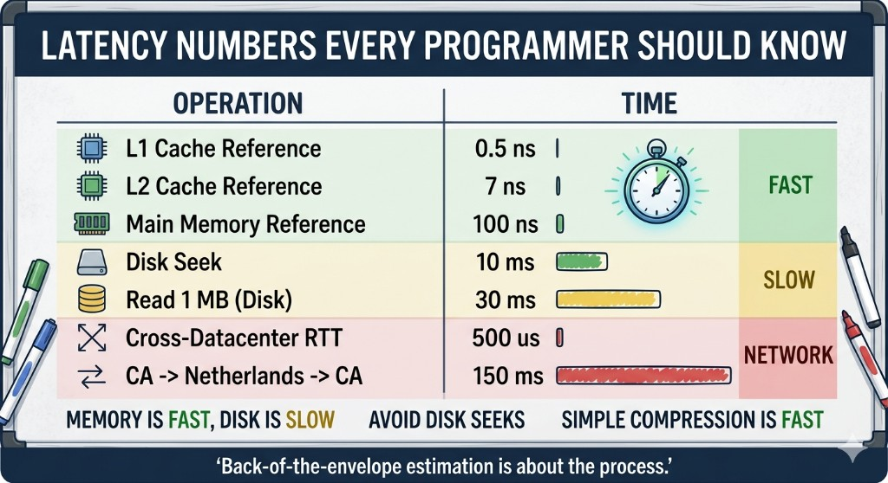

Blog
Technical insights, backend development, and software engineering notes.
-
The Ghost Row Problem: Laravel Octane + Swoole in Kubernetes
How persistent Swoole worker connections can keep phantom transactions alive and silently lose INSERTs, plus practical production-safe fixes.
-

إزاي تحسب الـ System Capacity في ثواني؟ (Back-of-the-envelope) 🧮
ثوابت القوى، الـ Latency، الـ Availability، ومثال تويتر — تقدير سريع للسعة قبل ما ترسم الـ architecture في إنترفيو System Design.
-
Beyond SOLID: Building Components That Last Years · ما وراء الـ SOLID
Clean Architecture component rules: cohesion (REP, CCP, CRP) and coupling (ADP, SDP, SAP). Bilingual Arabic & English in one article.
-
Fintech + Logistics Architecture: A Production-Grade Blueprint
Production-grade reference architecture for Laravel + Vue + Flutter: microservices, DDD, event-driven coordination, bounded contexts, and deployable blueprints.
-
لماذا تفشل الشركات في إدارة المطورين؟ (تحليل علمي)
تحليل علمي: Design Stamina Hypothesis، الديون التقنية، تأثير دانينغ-كروجر، والعدالة التنظيمية. حلول: DoR، Blameless Post-mortems، Evidence-based Management.
-
Why Servers Crash: The Database Connection Problem
Overusing "new DatabaseConnection()" can open 1000 connections for 1000 users. The Singleton pattern saves memory and keeps your server alive.
-
The Operational Excellence Manual: From Chaos to Scalable Engineering
A guide to shift from chaos to engineering excellence: requirements engineering, systematic lifecycle, blameless culture, DORA metrics, and technical debt management.
-
14 System Design Articles to Upskill
Essential reads for software engineers: authentication, OAuth2/JWT, caching, databases, distributed systems, and system design interview tips.
-
RESTful API Design Principles
Best practices for building consistent, maintainable APIs. Nouns over verbs, status codes, versioning, and pagination.
-
Welcome to My Blog
A short introduction to this space. I'll be sharing thoughts on backend architecture, Laravel, PHP, system design, and lessons from building production systems over the past decade.